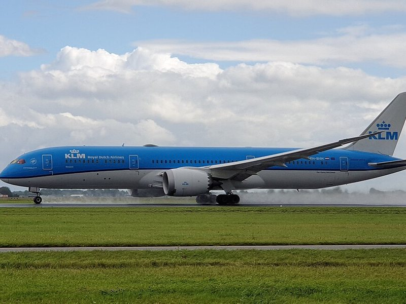

2/13 (토)
인천 → 암스테르담
그날 볼 것


위키미디어 공용 자유 라이선스 사진 — 실제 방문 매장 사진은 아님

| 시각 | 일정 | 근거 | 비용(2인) |
|---|---|---|---|
| — | 여행자보험 2인 (사전 구매) | 예산(현장 결제) | 80,000 |
| — | eSIM 10일 2인 데이터 (사전 구매) | 예산(현장 결제) | 20,000 |
| 19:30 | 집 → 인천공항 (공항버스 2인) | 예산(현장 결제) | 30,000 |
| 21:00 | 공항 저녁 (커피·샌드위치) | 예산(현장 결제) | 19,751 |
| 21:40 | 체크인 · 수하물 · 출국심사 | — | |
| 23:05 | KL856 ICN 23:05 → AMS 05:20+1 · B787-9 · 14h15 · 예약 XUHBAH · 구글 항공권 2/13 ICN→LIS · 2/23 BCN→ICN 오픈조 · 예약 | 실결제(11/15 KLM 영수증) | 2,689,000 |
| — | 기내식 2회 (운임 포함) | 실결제(11/15 KLM 영수증) | — |
| 숙박 — · 식비 19,751 · 입장·이동 2,819,000 | 2,838,751 |
시간이 되면 여기도
비워 둔 시간에만 넣는 후보 — 예약·비용은 현장 판단
- 공항 라운지출국심사 후 자유 — 별도 비용
이 날 합계2,838,751